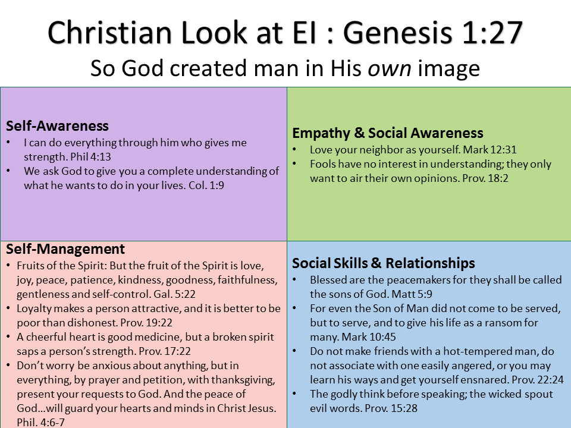

Emotional Intelligence
This Week's Scriptures
- We are all leaders of ourselves.
- We sometimes have the wrong measure of spirituality.
- We look at the exterior of people and judge.
- We only pay attention when we are impressed.
- If we live by being impressed, we will live on the sides of our blessings instead of in our blessings.
- We should stop looking at the material things to gauge our progress or growth.
- Emotional intelligence is part of the equation‐ IQ is not all that needs to be brought at the table.
- Emotional stability we display will enable us to apply the words we have heard‐ otherwise, eveything would sound like an accusation.
-
- You think about your feelings
- You pause
- You strive to control your thoughts
- You benefit from Criticism
- You show authenticity
- Our emotions could get in the way of our blessings.
- We can not live at the mercy of others and hope to move forward.
- If you don't want to talk about your issues, we should at least tell the Lord.
- Do not allow the sun to go down on your anger.
- We should pray for emotional strength.
- The bible says we should go from glory to glory.
- We need sometimes to pause and ask ourselves what we are doing to advance ourselves.
- When we become emotional about issues, we stop improving.
Discussion Questions
- Can you tell us about a conflict/experience at GPC that made you feel frustrated?
- What is the most needed EQ attribute at our church?
Growth Mindest
- EMOTIONAL INTELLIGENCE IS BIBLICAL WISDOM- ( Galatians 5:19-23 )
- “ A stable Christian is a growing Christian.”
Additional Material
